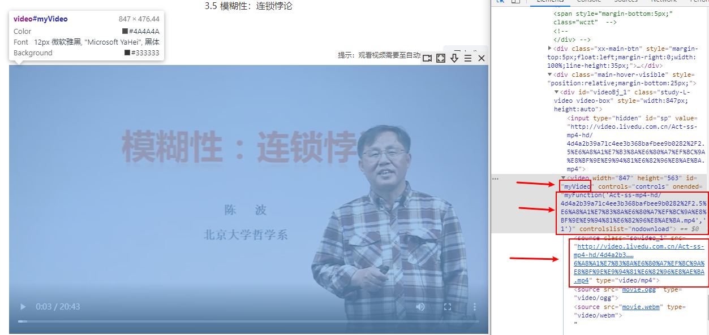
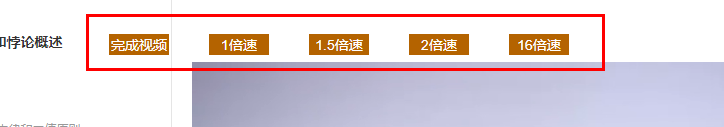

简易油猴脚本开发
适用于融优学堂
脚本开发基于原生JS，用于融优学堂刷网课，可强制调整倍速和一键完成。
打开视频播放页面，发现页面加载完成后按F12无法打开浏览器控制台，应该是网站做了限制，解决方法如下：
一、在另一个网站打开控制台后通过网址进入；
二、页面未加载完成时狂按F12，小心别多按；
三、上面两个都是自己琢磨的傻子方法，上网查后了解到鼠标点一下地址栏就按F12就有效果。
随便加入一个课程（用外校的不怕翻车）顺利打开控制台后选中播放器，如下图所示。
右侧箭头标出对开发有效的部分，分别为video标签的id，DOM方法onended和链接，该网站所有的页面，播放器id都一样， 所以我们写的时候也不需要额外操作，直接使用代码获取对象即可。
document.getElementById("myVideo")
根据以上获取的id到w3c官网查video标签的DOM属性，找到有用的是currentTime和playbackRate。
前者是直接跳转时间，后者是调整倍速播放。
经测试时间的跳转无效，而倍速播放有效，最高16倍速（找到好东西了）。
此时打开控制台输入：
document.getElementById("myVideo").playbackRate = 16
就直接可以调整为16倍速。
但是我们发现，在w3c的手册中并无onended属性，所以这个可能是网站开发者自行添加的一个方法，在控制台直接输入：
document.getElementById("myVideo").onended()
就会发现视频右上角直接跳出“已完成”字样。
刷新后发现目录中的该视频显示已完成，但是注意尽量只在一个页面只有一个和视频的情况下使用，因为测试过程中发现有一个页面两个视频有翻车风险。
至此，js的命令和油猴插件的基本功能确定。油猴插件相当于在相应的页面上直接运行插件中的js代码，所以直接写需要的js即可。
添加几个按钮，设置不同速度和一键完成，在完成键上设置确定选项。
具体实现效果如下图所示。

图方便直接将按钮设置成fixed定位。
打开视频后测试无问题，无需打开控制台即可调整。
代码压缩包下载链接（点我），导入油猴插件
还有网站的视频链接没有提到，复制直接在新标签页打开，右键直接另存为（吐槽一下这个网站太粗心了，几乎没有加密）。
所以现在网课就可以直接加速或一键完成，然后把网上的东西下载下来自己随便看。